We are a practical software studio. From first idea to working release, we help businesses turn uncertainty into real-world technology.
Build The Software Your Business Is Waiting For
KJR Labs turns rough requirements into clean websites, Chrome extensions, dashboards, apps, and automation systems your team can actually use.

We are a team of builders and digital strategists focused on reliable systems, clear user flows, and products that keep improving.

Services
End-To-End Development Services
Whether you need a better website, a browser product, an internal dashboard, or automation for repeated work, we shape the scope and ship the useful version first.
Website Development
Company sites, landing pages, service pages, SEO structure, and contact flows designed to turn interest into enquiries.
Custom Software
Dashboards, admin panels, portals, workflow tools, data views, and software that matches how your business already works.
Chrome Extensions
Browser utilities, productivity helpers, paid extension products, workflow add-ons, and polished Chrome Web Store-ready releases.
Automation Systems
Scripts, integrations, reports, alerts, data movement, and automation that saves hours without adding operational complexity.
Not sure which service fits? Send the problem and we will point you to the shortest practical build path.
Find The Right BuildProcess
From Requirement To Launch
You bring the problem, rough idea, or workflow. We turn it into a clear build plan, reduce guesswork, and move quickly toward something usable.
- 01. Map & Scope Understand users, business goals, data, priorities, and the exact result the software must create.
- 02. Design & Build Create the interface, backend, integrations, and product logic with a first-release mindset.
- 03. Test & Improve Check usability, performance, edge cases, and launch readiness before the product reaches users.
- 04. Launch & Support Launch the working version and keep the product adaptable as new requirements appear.
Have a requirement already?
Send the brief now and we will respond with the next practical step.
Send The Requirement
Best Fit
Products Built Around Your Business
KJR Labs is for founders, teams, and businesses that need software to remove friction, improve follow-up, speed up work, or create a stronger digital presence.
Engagements
Simple, Transparent Build Paths
No bloated proposal before the problem is clear. We start with the outcome, define the smallest strong version, and expand only where it adds value.
Starter Build
Best when you need a sharp first release without overbuilding.
Launch the essentials- Clear requirement mapping
- Responsive conversion-focused design
- Frontend or lean backend setup
- Performance, SEO, and analytics basics
- Deployment-ready handoff
Growth Build
Best when the product needs workflows, data, integrations, and room to grow.
Build the system- UX and architecture planning
- Custom UI and product workflows
- API, database, and integration setup
- Testing, deployment, and release support
- Post-launch improvement planning
Contact
Tell Us What You Want To Improve
Send the requirement, current problem, target users, timeline, and any reference you like. We will reply with a practical next step.
FAQ
Questions Before You Start
Clear answers to the questions that usually come up before starting a software build.
Ask A QuestionCan I contact you if my idea is still rough?
Yes. A rough idea, current problem, workflow screenshot, or reference website is enough. We help convert it into a clear first version with priorities, scope, and next steps.
What kind of projects are the best fit?
Business websites, landing pages, Chrome extensions, dashboards, admin panels, internal tools, portals, automation flows, and custom web apps are the best fit.
Do you help decide what should be built first?
Yes. We separate must-have features from nice-to-have features, then focus on the smallest useful release so you can launch faster and avoid paying for unnecessary scope.
Can you improve an existing website or software?
Yes. We can redesign, rebuild, optimize, automate, add features, improve mobile responsiveness, clean up user flows, or turn an existing manual process into a working system.
How fast can a project start?
That depends on scope and availability, but the first step is quick: send the requirement and we will reply with what needs clarification, what can be built first, and the practical path forward.
Will the website or app work well on mobile?
Yes. Responsive layout, readable text, usable buttons, and clean mobile navigation are treated as part of the build, not as an afterthought.
Can you work with startups and small businesses?
Yes. We are a strong fit when you need a practical first version, better digital presence, an internal workflow tool, or automation that saves operational time.
Who owns the final code and assets?
After final payment, the agreed deliverables belong to you. We can also help with deployment, documentation, and handoff so the project is not dependent on one person.
Do you provide support after launch?
Yes. We can support improvements, fixes, analytics review, small feature additions, and ongoing maintenance depending on what the project needs after release.
What should I include in the first email?
Include what you want to build or improve, the target users, the main problem, must-have features, timeline, budget range if decided, and any references or screenshots.
How do we start?
Use the contact form or email kjrlabs9@gmail.com with the requirement. We will review it and reply with the next practical step.